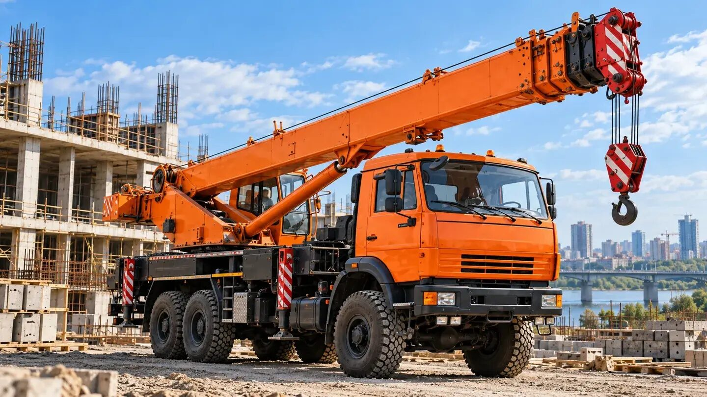
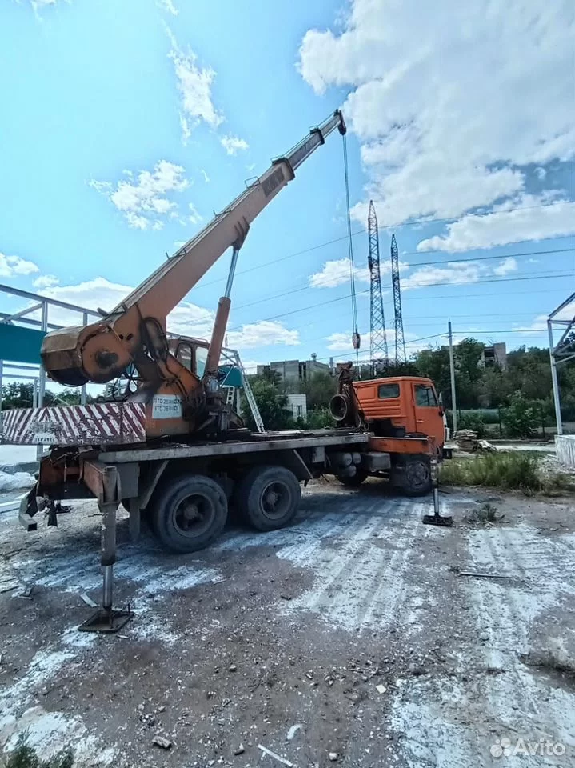
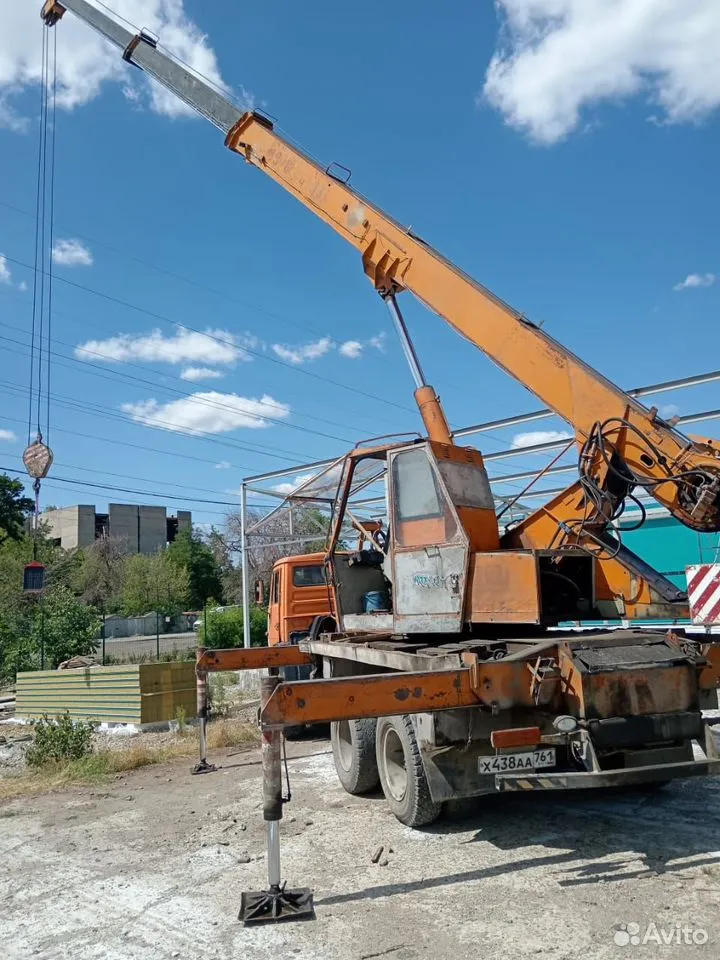

Монтаж
Подъём и установка конструкций, оборудования и железобетонных изделий.
Опыт более 30 лет

Строительные, монтажные и погрузочные работы собственным автокраном.
Подъём и установка конструкций, оборудования и железобетонных изделий.
Работа с грузами на строительной площадке, складе и частном участке.
Перестановка оборудования и строительных материалов на объекте.
Возможна работа на долгосрочных объектах
Помогу оценить задачу и согласовать условия выезда.
Возможность подъёма зависит от массы груза, вылета стрелы и условий площадки. Обсудим их перед выездом.
Реальные фотографии с площадки


Выезжаю на стройплощадки, предприятия и частные объекты. Подачу в ближайшие районы обсудим по телефону.
Позвоните или напишите, где и когда нужен автокран.
Что поднимаем, примерная масса, расстояние до места установки и условия подъезда.
Уточним возможность подъёма, время подачи и стоимость до начала работ.